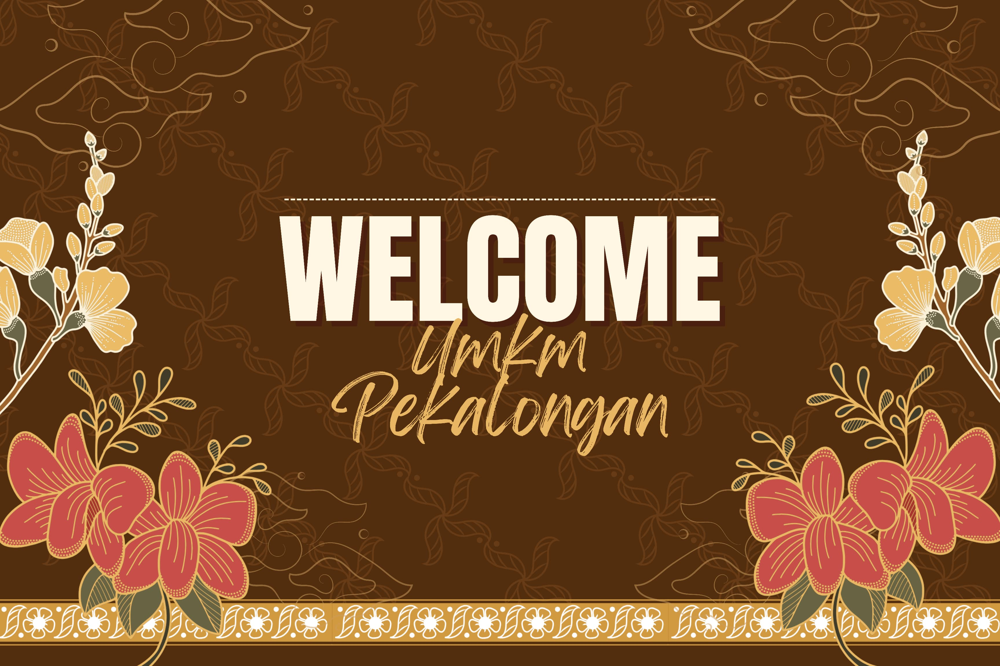

Kami menyediakan berbagai produk lokal khas Pekalongan yang berkualitas tinggi.
Pekalongan terkenal dengan produk batik dan kerajinan lainnya. UMKM di Pekalongan terus berkembang dengan berbagai produk unggulan seperti batik, sarung goyor, dan kuliner khas.
Baca lebih lanjut tentang produk kami.
Deskripsi: Batik Pekalongan dikenal dengan motifnya yang beragam dan penuh warna. Batik ini dibuat dengan teknik tradisional yang diwariskan secara turun-temurun, menjadikannya salah satu produk kebanggaan Indonesia. Motif batik Pekalongan sering kali terinspirasi dari alam, flora, fauna, serta budaya lokal.
Bahan: Kain katun premium yang nyaman dipakai sehari-hari atau untuk acara formal.
Harga: Rp 150.000 - Rp 500.000 (tergantung jenis dan motif).
Kegunaan: Cocok untuk pakaian sehari-hari, baju kerja, atau acara resmi.
Kelebihan: Warna tahan lama, motif unik, dan nyaman dipakai dalam berbagai cuaca.
Deskripsi: Sarung Goyor adalah sarung tradisional khas Pekalongan yang dibuat dengan teknik tenun manual. Sarung ini terkenal karena teksturnya yang lembut dan elastis. Proses pembuatannya memerlukan ketelitian tinggi sehingga menghasilkan sarung berkualitas premium.
Bahan: Benang katun pilihan yang ditenun secara tradisional.
Harga: Rp 200.000 - Rp 600.000 (tergantung ukuran dan motif).
Kegunaan: Digunakan untuk ibadah, acara adat, atau sebagai busana sehari-hari.
Kelebihan: Lembut di kulit, tahan lama, tidak mudah kusut, dan memiliki nilai seni tinggi.
Deskripsi: Soto Tauco adalah kuliner khas Pekalongan yang memiliki cita rasa unik karena menggunakan tauco sebagai bumbu utamanya. Soto ini terdiri dari daging sapi atau ayam yang dimasak dalam kuah kaldu gurih dengan tambahan tauco yang memberikan rasa asin-manis yang khas.
Bahan: Daging sapi/ayam, tauco khas Pekalongan, rempah-rempah pilihan.
Harga: Rp 25.000 - Rp 40.000 per porsi.
Kegunaan: Cocok untuk santapan makan siang atau malam dengan cita rasa yang khas dan menggugah selera.
Kelebihan: Rasa autentik dari tauco asli Pekalongan yang sulit ditemukan di tempat lain.